杜克大学13幅逻辑图，传递了这些影响你一生的思维方式
2019年01月28日 10:17:15
来源：文汇APP
杜克大学作为全球排名第七的大学，在全球教育界中有着巨大的影响力，其中有13张逻辑图，非常简洁清晰地传递了一些可以影响你一生的思维方式，今天结合自己的生活阅历，分享与解读这13幅经典的逻辑图。
No.1、什么是生活
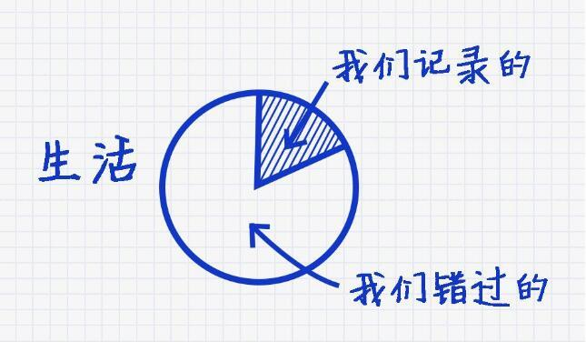
什么是生活呢？
在这个年龄我对生活的理解由两部分构成：一方面生活是我们经历的集合，这个经历包括了我们记忆的以及被遗忘（错过）的。你需要知道的是，每个人的经历是自己多个选择的集合，而每个选择则是由自我意识及自我认知而决定的。
另外一方面，生活的本质是一个自我认知的过程，回顾往生：
或许是自己不懂事；
或许是随意地得过且过；
或许是自己不懂得珍惜；
或许是自己不知道自己真正的内心期许是什么？
也或许是错过了不该错过的人；
也或许是错过了不该错过的事；
其实这些错过，也有机会成为我们生活的一部分，只是一不小心，你选择了它的反面，绘制了另外一条生活轨迹，当然你今天的每个选择，也决定了你明天的生活轨迹，就是我们生活中的一个重要模式。
所有的经历，不管是好的，还是坏的，最终都会擦肩而过，时间会让你忘记所经历的一切，甚至你都不曾记得你初恋的样子，甚至你不能描绘出你父母双亲的面孔，真正留在你脑海中的记忆，就是你真正的生活。
“Pay close attention. This is your life.”
No.2、明天比今天更重要
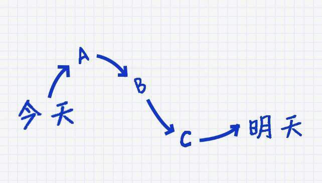
人们总是过于在意那些重要的决定（比如接受什么样的工作或者职位）但是实际上明天总是模糊的。潜心规划，向你认为最好的目标大胆进发，要知道，很少有所谓完全“正确”或是“错误”的决定，因为它们只不过都是一个让你的生命进入下一个阶段的台阶。
活在当下是一种人生的选择，而杜克大学却在告诉我们，更要思考明天。
什么是“明天”？在不惑之年，我认真的思考这个问题，我的理解是：
自己真正想要的生活是什么？自己的内心真实的期待是什么？自己的情感期待是什么？谁是自己最重要的人？什么是爱自己？什么是爱别人？
...................
这些问题的答案，就如人生旅程中的灯塔，可以帮助每个人通往自己的明天。
如果没有了这个灯塔，前行的路上就会有更多“错误”的选择，从今天--->到明天，是一条不可逆转的路，跟随自己的内心，认真选择与珍惜对的人，认真选择与珍惜对的事情，明天一定会更好。
No.3、获得满足感
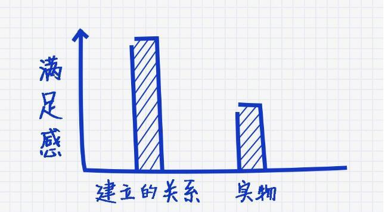
物欲来得快，去得也快，这是物欲世界的恶性循环，20年前或许自己因为买了第一部手机而开心得不得了，10年后或许你换了一辆跑车都买不回当时的开心。物质带来的满足感总是有时间限制的，因为物质基本上可以用钱获得，因为有钱，物质的获得越来越容易，因此带来的快乐与满足感也越来越少——也许这就是明星吸毒、出轨的一个重要原因。
钱绝对不是我们人生追求的终极目标，它只不过是满足我们的需求、实现我们目标的工具而已，可是很多人只想有很多钱，却不知道用这些钱来干什么，因此，在现实生活中往往会出现两种情况：
钱有了，却终日无所事事；钱没了，所有的精力及焦点都陷入到“求生存”的状态，几乎没有空闲的心情去思考幸福的事情，然后越来越穷，越来越没有幸福感。
No.4、体现生命的价值
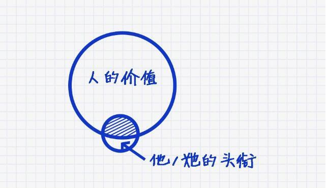
人的价值及生命的价值有很多，但是头衔在价值中的占比应该是非常少的。“头衔”一方面是你的荣誉，过度地看中头衔的本质是极其依赖他人的评价，也就是所谓的面子，有挺多中国人的安全感是建立在面子上的。
在这里想起了复旦大学陈果教授的一句话，借此分享给大家：“不管你有多优秀与糟糕，不管你活成什么样子（有怎样的头衔）总有人会喜欢你，也总有人会不喜欢你，美好生活的唯一方式就是做回那个真实的自己，不以物喜，不以己悲。”
从另外一个角度去讲，在我们学习与成长的过程中，也切忌被所谓的头衔所迷惑，不管是明星也好、大咖也罢，其实每个人都有自己难念的经，他们的生活方式不是你的生活方式，他们的学问与头衔也不是你的学问与头衔，你唯一可以成长的就是了解自己，学习他人头衔背后的默默付出，才更有机会走向美好的明天。
NO.5、在拒绝中寻找机会
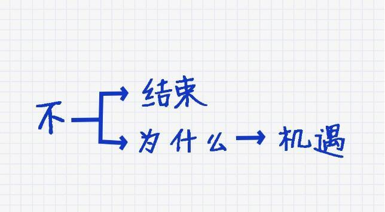
学会重新认识拒绝，并在拒绝中寻找机会，这是每个成年人的功课。
被拒绝是生活中的必然，有的人因恐惧被拒绝，而不善于求助他人；有的人因胆怯被拒绝，而错过了那个本来也喜欢自己的人；有的人因为惧怕被拒绝，措施了一单重要的生意，这样的例子数不胜数。
其实，面对被拒绝，人们最大的问题在于遭受拒绝的时候“郁闷”的心情，这种情绪的本质是一种自我保护与防卫的机制，一旦陷入到这种自我防卫的机制中，我们几乎就丧失了关于“可能性的思考”，由此而失去了原本可以创造的新机遇。
面对拒绝，首先是妥善地处理我们的情绪，然后再坦诚不公地与对方探讨背后的原因是什么？由此，我们便可以为自己创造更多的可能性，即便是再次遭受拒绝，那也没有关系，因为你给对方留下了成熟、良好的印象，也减轻了对方拒绝你面临的心理压力，为未来的合作奠定了很好的基础。
记住了，这是一条很有用的社交法则。
No.6、挑战自我
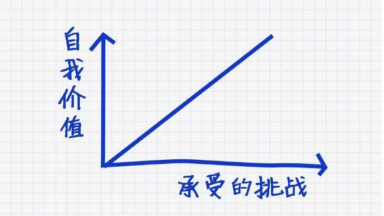
其实对于这张图我的理解是：主动地接受有意义的挑战。
每个人的价值，与他能填坑的能力成正比。在你的工作与事业中，你总是去挑选一些简单的事情，谁都可以做的事情，你将随时被取代。
当然，你也需要知道，并非所有挑战都是有意义的。
请你特别注意，在不久的未来，取代你的或许不是人类，而是AI机器，所以，拥抱未来的最好方式就是主动的、大胆的、有责任感的去承受来自工作及生活中的各项挑战，这是自我价值实现的唯一路径。
No.7、别害怕不确定性
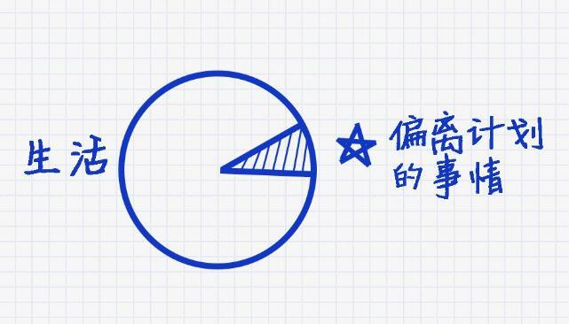
其实生活中有条定律是这样的：生活中，总会有事情偏离你计划的轨道，你唯一可以选择的是以什么样的态度及方式去应对这些“出轨”。在这里南哥也给你推荐另外一篇文章《科学解释：家和万事兴》可以加深你的理解。
其实偏离计划的事情，往往可以帮助自己打破“舒适圈”。在我年轻的时候，我会刻意选择一些自己不愿意做的事情，例如：我不太喜欢社交型的饭局，当我意识到这个问题的时候，去积极参与社交活动则产生了不少收获，也认识了更多的朋友，并且跨界交流也是蛮有意义的。
当然，一些“意外出轨”的事情，或许会给我们带来不好的情绪与结果。如果我们积极地反思这个过程，个人的成长还是蛮大的，所以尝试你没有尝试的是一种进步，有时候也很Cool！
No.8、回顾过去的经历
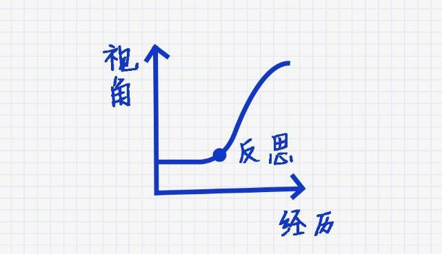
生活中，你需要有一种习惯：停下来，回顾你所经历的生活，这将让你的经历变得更加有意义。
在回顾的过程中，跳出自我，用第三人称的视角反思经历过的事情，反思自己的行为是否恰当；反思自己是否无意间给他人带来伤害；反思是什么导致自己生活中的冲突，思考在第三人称下的这个自己应该承担怎样的责任，都是自我成长绝佳的机会。
其实，当我们换个角度去看我们人生经历的时候，有蛮多的经历会真正的变成有价值的经验，从而真正指导我们创造丰盈的人生。
中国有句古话：“江山易改，本性难移”，其实挺有道理的，而真正突破自己的，除了人生中突如其来的意外与伤害（但是这个改变的代价太大了），剩下就是我们养成自我反思的习惯，面壁思过，每日三思或许是前人给我们留下的最好的修行方法。
换一个角度去反思我们所经历的人或事，或许你可以这样：
不再去恨一个此生再不会有交集的人；
去接纳过去的被伤害，让伤害相忘于江湖；
去发现自己原来也是如此的善良与勇敢；
去发现当年自己曾如此热烈地爱过；
去发现自己当年是如何激情地拼搏过；
或许我们的这份人生的经历，不管是好还是坏，都变得更加有意义。从这个角度去看，人生的一切经历都是财富，只要你换个角度，这个财富就会真正地出现在你未来的日子中，所以在这里有一条真诚的建议送给大家：放下成见与固执，切换一下心智的视角去对人、对事、对待过去的经历，你的人生一定会有所不同。
No.9、受到教育不等于聪明
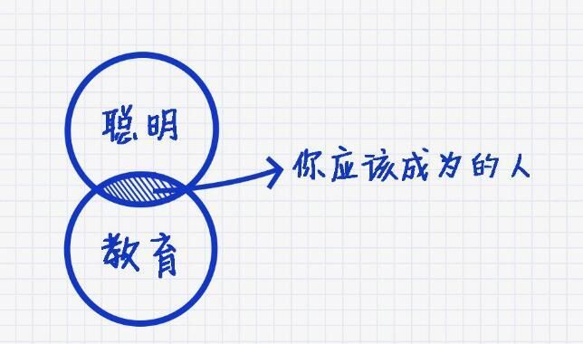
杜克大学特别强调：“Never confuse being educated with being smart。”别把受到教育这件事和聪明这件事混为一个概念。
在中国，其实这条法则很有现实意义：有些受过高等教育的人，却在重复着低级的错误，将自己的快乐建立在别人的痛苦上，这不叫聪明，这是披着高等教育外衣的愚昧。
张小龙曾经说过：“善良比聪明重要”。我想不管是家庭教育还是学校教育，首先教育的是善良而不是分数及学历，这才是我们每个人应该成为的人。
No.10、阅读能激发灵感
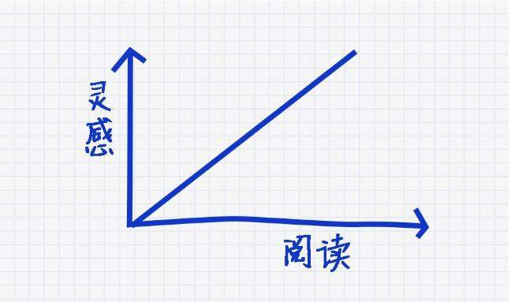
这是一幅需要铭记在心的图画，你阅读越多，你的灵感就越多。当然，南哥在这里特别强调的是阅读，而不是听书，虽然这两种方式都可以获得知识，对我自己来讲，阅读带来的灵感是远远大于听书带来的灵感，我总结了四个原因分享给大家：
阅读需要物理环境支持，而这个环境也支持灵感的产生；
阅读可以自主控制进度，随时停下来思考，而听书却有诸多不便，所以有时候你听了很多书，却没有实质的价值就是这个原因；
阅读的时候，随时可以将自己的灵感记录下来；
阅读非常适合反复咀嚼，而听则不太容易；
所以，找到恰当的书籍，在阅读的时候联想解决自己遇到的问题，并结合书籍上的启发，探寻解决问题的方法，是一种非常高效的学习途径，期待你能从实践中感悟这一点。
No.11、如何做自己

杜克大学认为：“Be true to yourself. Be willing to learn and to be coachable.”如何做自己，杜克大学给出了三条重要的法则：诚实地对待自己、求知若渴、谦卑是教。
今天，我想重点说的是“诚实”：关于诚实我们被这个社会教坏了，导致我们有一部分人不能诚实的对待别人，更不能诚实的对待自己，所谓的诚实对待别人是：真诚的语言+真实的想法；而诚实的对待自己是：认清自己真实的想法与情绪，能够允许自己的喜怒哀乐。
No.12、拥有感恩的心
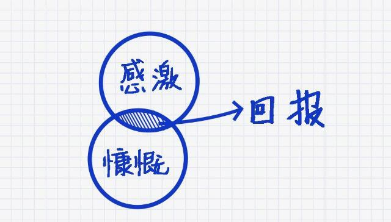
杜克大学认为“Give back—serve from a sense of gratitude.”回报用感恩的心，感恩身边的人和事，如果他人真有所求，有一颗慷慨的给予他人与感恩之心同样重要。
关于感恩的心很多时候被解读为知恩图报，实际上感恩只是一种幸福生活的方式，因为常怀感恩之心的人，内心总是充满了感动；而那些受益者以理所当然的心态，或者是一味的扮演索取者的角色，是永远无法感受到这份感动，他们时常陷入到抱怨的痛苦之中，或许这是对不懂感恩的人最大的惩罚。
No.13、坚持
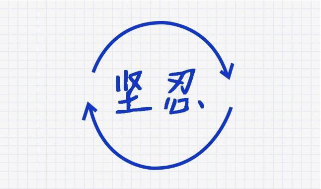
杜克大学认为，如果你要成为最好的自己，这条法则一定非常有用：“Stick with it，and keep moving”坚持，坚持，再坚持。
人生最大的遗憾在于坚持了不该坚持的，而放弃了不该放弃的。明智的选择，谨慎的行动是一种生活的阅历，比如说：你的坚持与倔强用在了人际关系中，这就叫坚持了不该坚持的；但是在事业与工作上却很放纵自己，不求上进，这就叫放弃了不该放弃的！